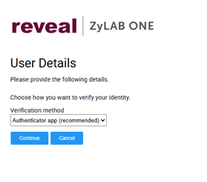
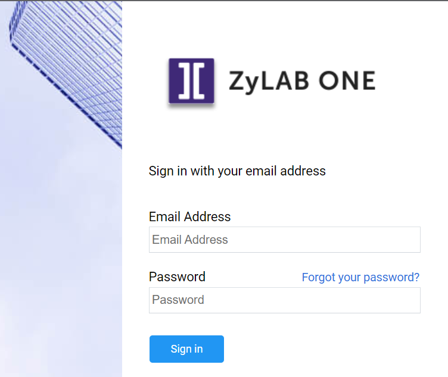

Select the authenticator app as your verification method.
At sign-in, on the User Details screen, under Verification method, select Authenticator app(recommended) and Continue.

2.Download the app and scan the QR code
Don't have the Microsoft Authenticator app on your phone yet? Download it from Google Play (Android) or the App Store (iOS). Then open the Microsoft Authenticator app and scan the QR code on screen to link it to your ZyLAB ONE account — this is a one-time step.

3.Enter the verification code.
Open the Microsoft Authenticator app, read off the 6-digit verification code, and enter it on screen. Then click Verify.

From now on, ZyLAB ONE will automatically ask for the code from your Microsoft Authenticator app at every sign-in, as long as Authenticator app stays selected as your verification method.

Lost your phone, got a new device, or need to reinstall the app?
Contact support@zylab.com. Support will reset the link, after which you can pair the Microsoft Authenticator app again using the steps above.